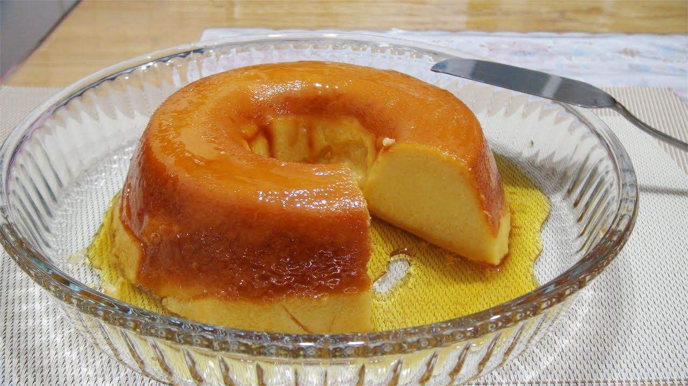
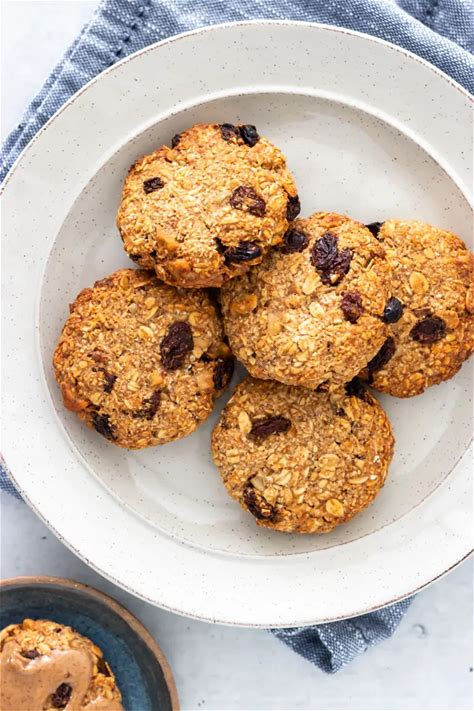
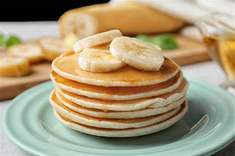

Pudim de pão

Ingredientes
- 3 pães de sal dormidos ou duros
- 8 colheres (sopa) de açúcar cristal
- 2 ovos inteiros
- 500ml de leite
Modo de Preparo
- Bata todos os ingredientes no liquidificador, até que a mistura esteja homogênea.
- Caramelize com calda queimada, uma fôrma de pudim, e acrescente a mistura do liquidificador.
- Leve ao fogo em banho-maria por, aproximadamente, 30 a 40 minutos.
Ingredientes
- 3 pães de sal dormidos ou duros
- 8 colheres (sopa) de açúcar cristal
- 2 ovos inteiros
- 500ml de leite
Modo de Preparo
- Bata todos os ingredientes no liquidificador, até que a mistura esteja homogênea.
- Caramelize com calda queimada, uma fôrma de pudim, e acrescente a mistura do liquidificador.
- Leve ao fogo em banho-maria por, aproximadamente, 30 a 40 minutos.
Biscoito de banana com aveia
Ingredientes
- 2 bananas bem maduras
- 1 xícara de aveia
Modo de Preparo
- Amasse as bananas e acrescente a aveia, misturando bem. Depois, faça bolinhas no formato de pequenos biscoitos.
- coloque para assar em uma forma untada por 15 minutos em forno pré-aquecido a 175 graus.
Panqueca de banana
Ingredientes
- 1 ovo
- 1 banana
- canela a gosto
Modo de Preparo
- Bata o ovo e amasse a banana. Junte a banana ao ovo em uma vasilha e mexa até dar liga.
- Adicione a canela e acenda o fogo em temperatura média e adicione o óleo em uma frigideira grande.
- Com uma concha coloque a massa na frigideira formando círculos e frite dos dois lados.